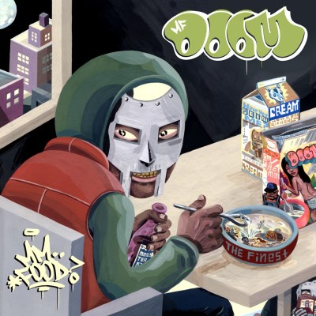
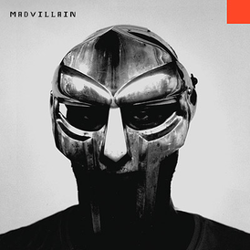

Биография
Дэниел Думилей — родившийся в Англии американский рэпер и продюсер, известный постоянным ношением маски, необычной манерой исполнения, а также текстами песен, в которых он отыгрывает роль злодея. Он использует множество сценических имен, среди которых MF DOOM (позже заменённое на DOOM), Viktor Vaughn, King Geedorah, Metal Face и Metal Fingers. Думилей начал свой творческий путь в 1988 году, основав с братом DJ Subroc группу KMD, в которой он принял участие под псевдонимом Zev Love X. В 1997 году он вернулся, но уже под псевдонимом MF Doom и скрывая своё лицо под маской. В 1999 году он выпустил альбом Operation: Doomsday, ставший культовым в андерграунд хип-хоп сцене.
MM..Food
MM..Food (с англ. — «Ммм… Еда») — пятый студийный альбом американского рэпера MF Doom, выпущенный лейблом Rhymesayers Entertainment 16 ноября 2004 года. Он стал вторым альбомом, выпущенным им под псевдонимом MF Doom. MM..Food является концептуальным альбомом, тематикой которого являются различные виды пищи. Альбом получил положительные отзывы критиков.
Madvillainy
Madvillainy (букв. — «Безумное злодейство») — дебютный альбом американского хип-хоп-дуэта Madvillain, состоящего из рэпера MF Doom’а и продюсера Madlib’а. Альбом был выпущен лейблом Stones Throw 23 марта 2004 года. Альбом был коммерчески успешным. Для обоих музыкантов он стал первым альбомом, попавшим в чарт Billboard 200, где он занял 179-ю строчку, став одним из самых продаваемых альбомов лейбла. Альбом был позитивно воспринят критиками. Madvillainy также освещался в изданиях, обычно не публикующих статьи о хип-хоп альбомах, среди которых The Washington Post, The New York Times и The New Yorker. Считается рядом критиков и слушателей одним из лучших альбомов обоих музыкантов. Ряд изданий и сайтов, посвящённых музыке, включили Madvillainy в свои списки лучших альбомов 2000-х.